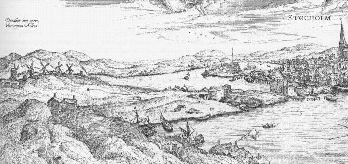

|
 Söderström från Södermalms östra del. Över till Södermalm leder en slussmaskineriets föregångare, som bl. a. innefattar två fyrkantiga krenelerade torn. Längre upp på Södra malmen ser vi en befästning - södra rundelen - färdig omkring 1560 och omgiven av såväl vall som vallgrav. - Kopparstick av Franz Hogenberg. Efter förlaga från omkring 1570. Klicka i rektangeln för förstoring! |